The whole sky,
on one quiet dial.
The sun, the moon, your heading, and the time, on one quiet dial, for iPhone, iPad, and Apple Watch.
The sun and moon sit at their real bearing and height on a compass that turns as you do. After dusk, the planets and brightest stars join them.
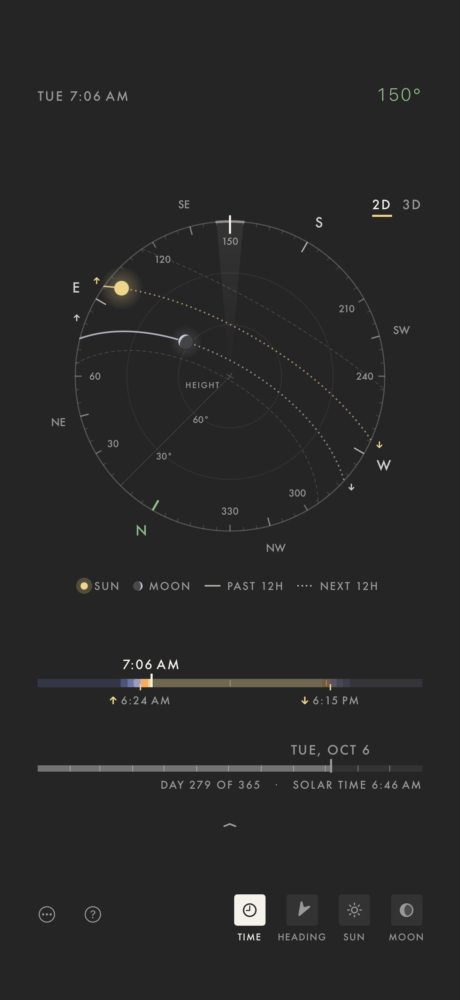
02 // About Meridian
A compass, a sundial,
and a moon chart in one.
Meridian works out the sky on your device: where the sun and moon are, which way you're facing, and the time, on a dial that turns with you.
No account, no ads, no tracking. It works offline, apart from searching for places and two features you choose to turn on.
What it does:
- Turns as you do, with the sun and moon at their real bearing and height
- Adds the planets and brightest stars after dusk
- Spins through the day, or jumps to any date, like the next full moon or the longest day of the year
- Raises the sky into a dome in 3D, or draws it over the camera in AR
- Lays out sunrise, golden hour, sunset, and twilight, and reminds you before they come
- Finds the days the sun and moon rise or set right down your street
- Shows the sky over any place you save, in its own time zone
- Answers at a glance with widgets, Apple Watch, and Siri: “When is sunset in Meridian?”
Night mode:
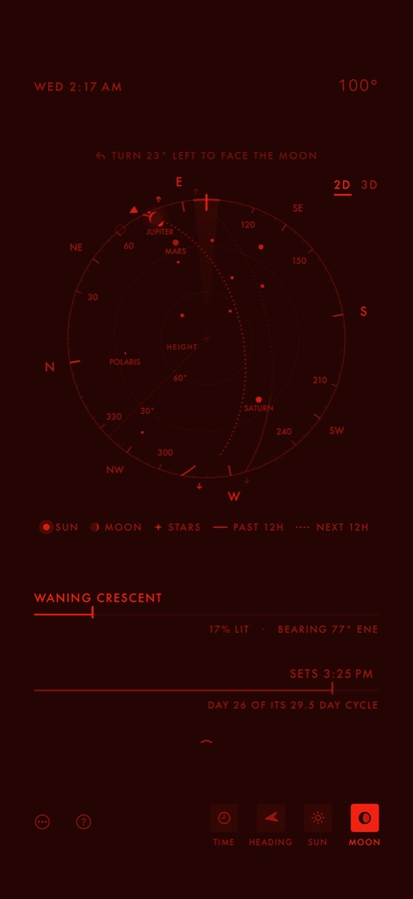
Everything turns deep red, so your eyes stay used to the dark while you stargaze.
03 // Screenshots
iPhone, iPad & Apple Watch
Select any screenshot to see it at full size.
iPhone · iOS 18 or later
-
01Sky dial
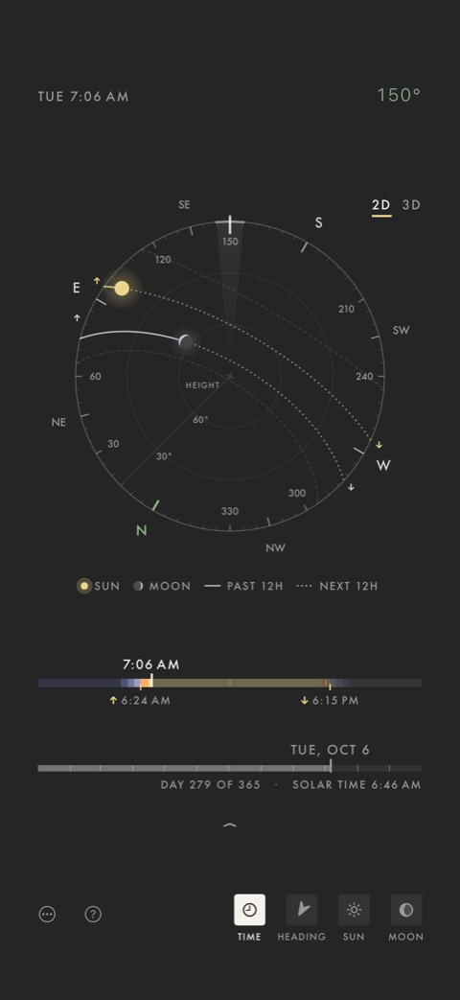
The sky dial Real bearing and height -
023D dome
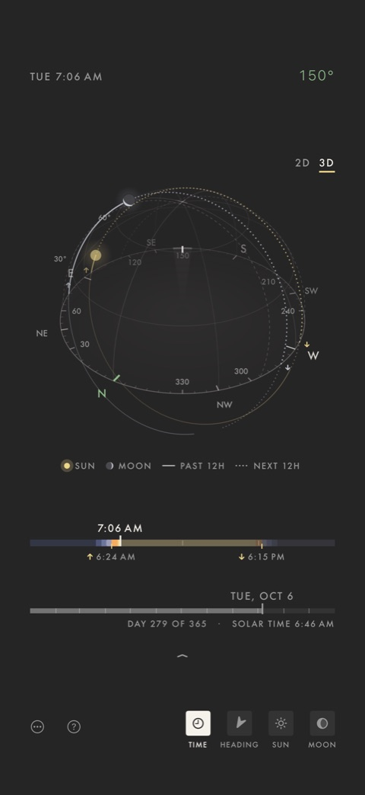
In 3D The sky as a dome -
03Night
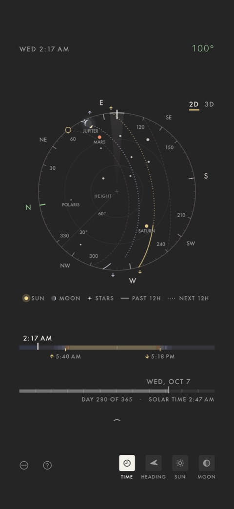
After dusk Planets and bright stars -
04Today
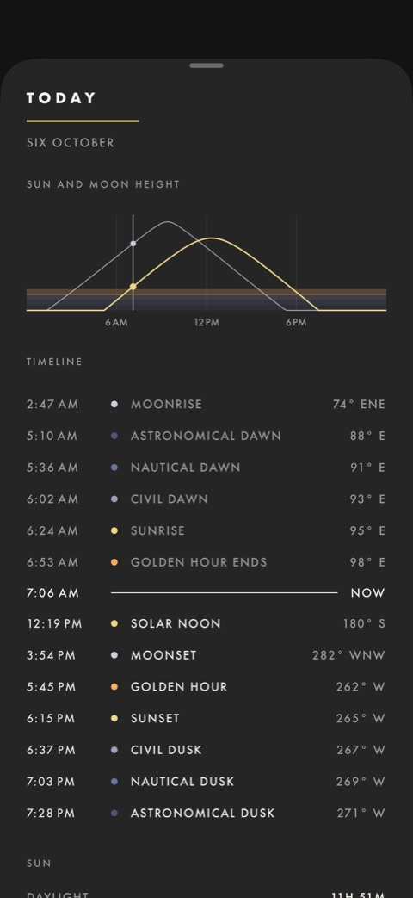
Today Dawn to dusk at a glance -
05295° WNW
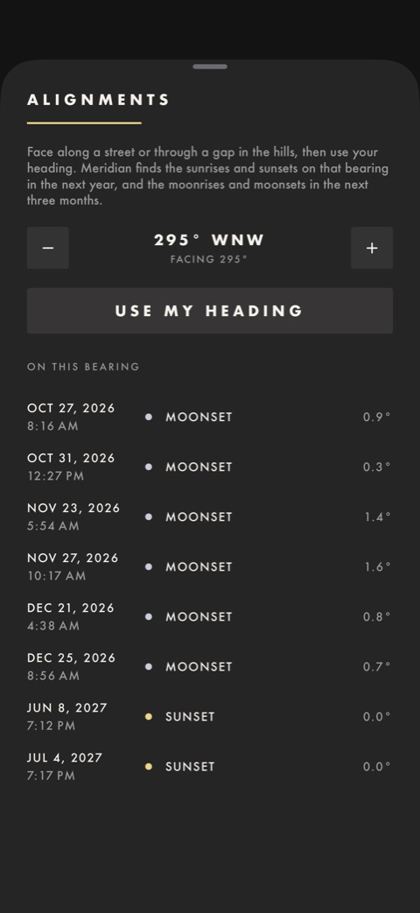
Alignments Sunsets down your street -
06October 2026
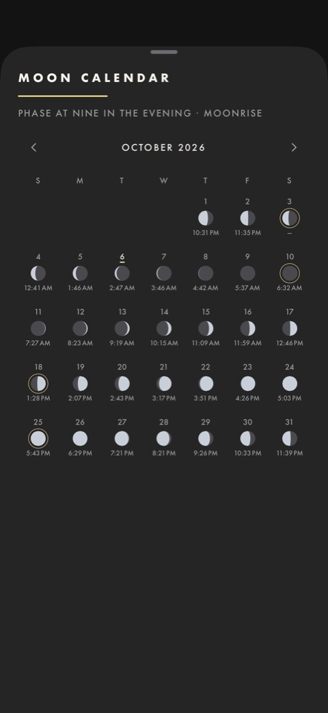
Moon calendar Each night's phase -
07Widgets
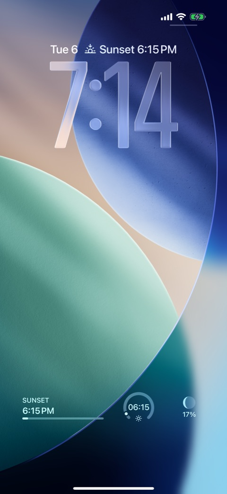
Lock Screen Sunset and moon widgets -
08300° WNW
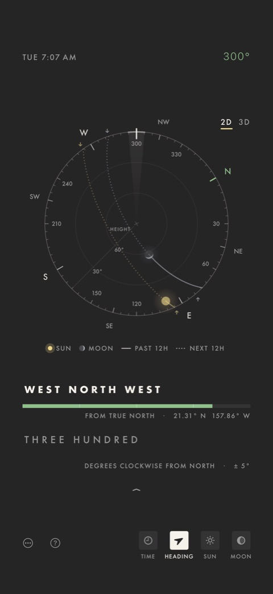
In words Every reading spelled out


iPad · iPadOS 18 or later
-
09Sky dial
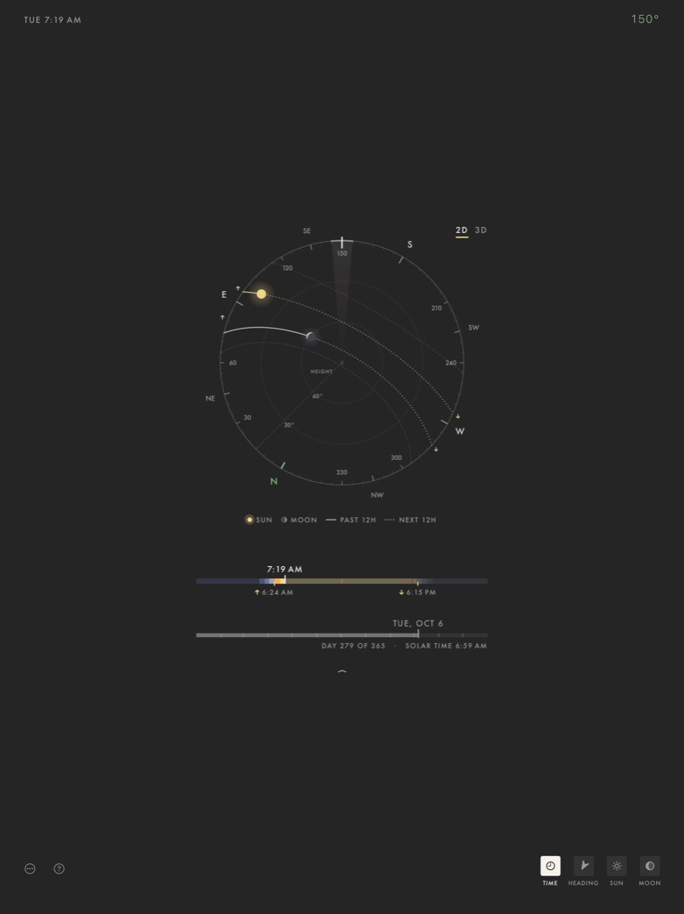
The sky dial Room to read every line -
10Timeline
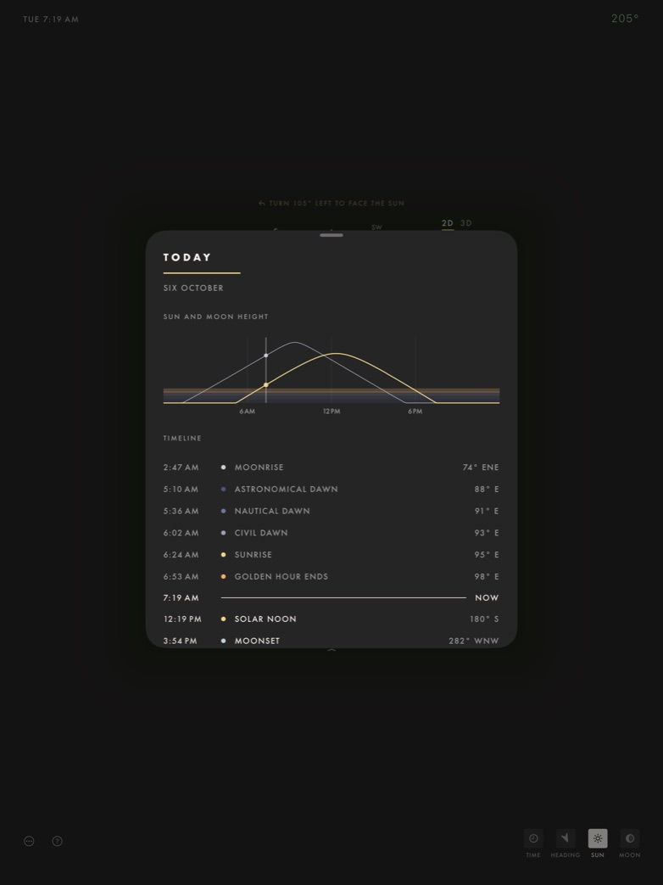
Today The day's light, laid out -
11Home Screen
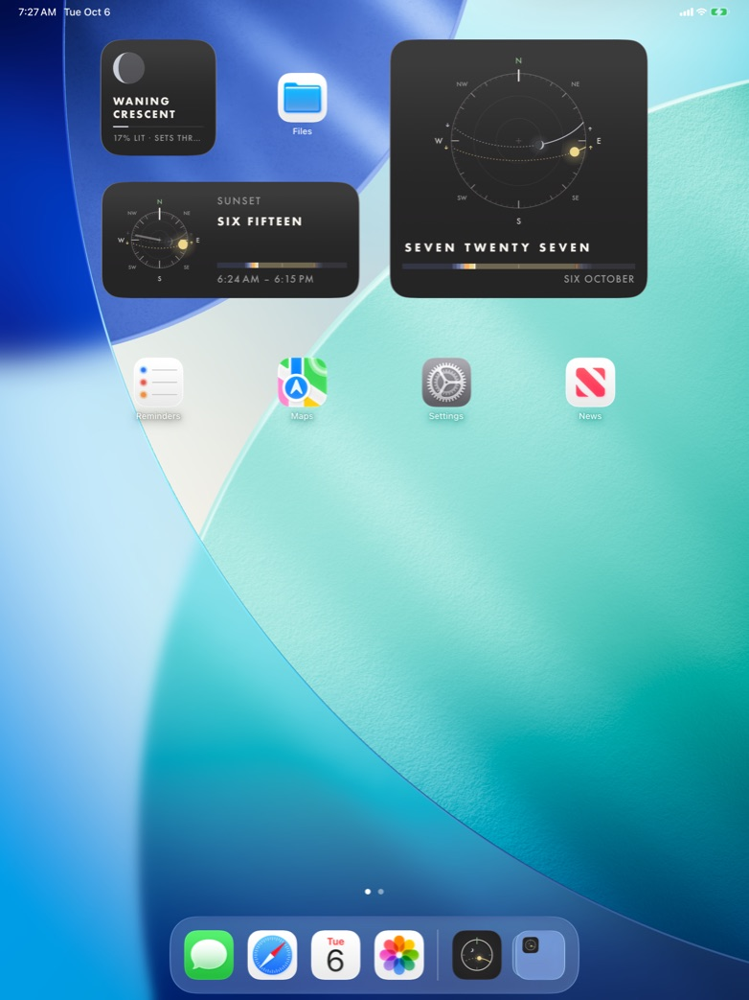
Widgets Sun, Moon, and Sky dial -
123D · Night
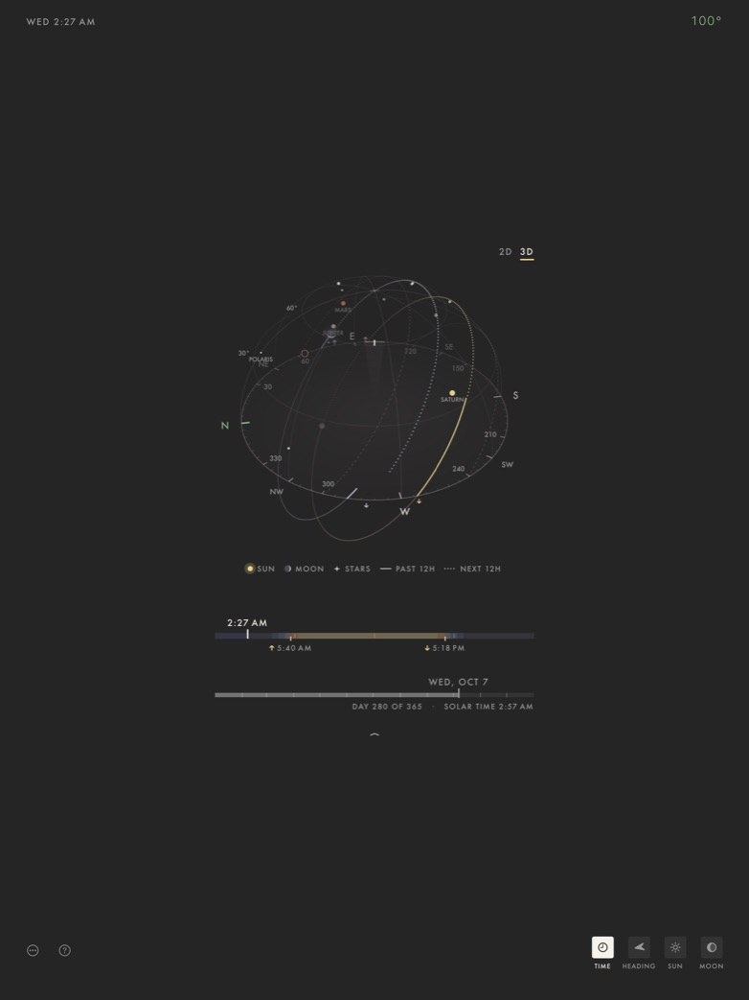
Night sky in 3D Planets on the dome


Apple Watch · watchOS 11 or later
-
13Sky dial
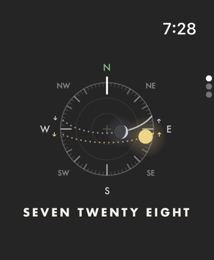
The dial The time, spelled out -
14Sun
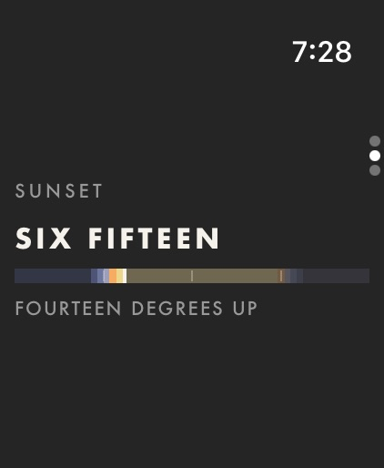
Sunset Six fifteen, 14° up -
15Moon
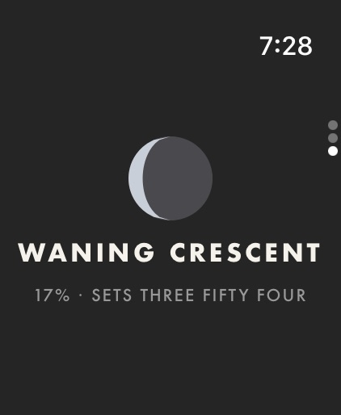
The moon Waning crescent, 17% lit - 16On your wrist Works on its own
Turn the Digital Crown to move through time, and tap to come back to now. No iPhone needed nearby.
Apple Watch Dial, Sun, and Moon


04 // Platforms & Language
Supported devices
-
iPhoneiOS 18 or later
-
iPadiPadOS 18 or later, in portrait or landscape
-
Apple WatchwatchOS 11 or later, with or without your iPhone nearby
-
No account, no ads, no trackingThe sky is worked out on your device. Privacy policy
Language
- English
Meridian is in English, whatever your device's language. Times, dates, and numbers follow your region.